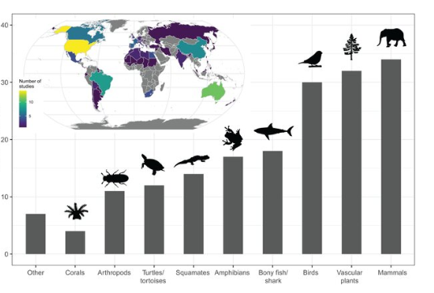
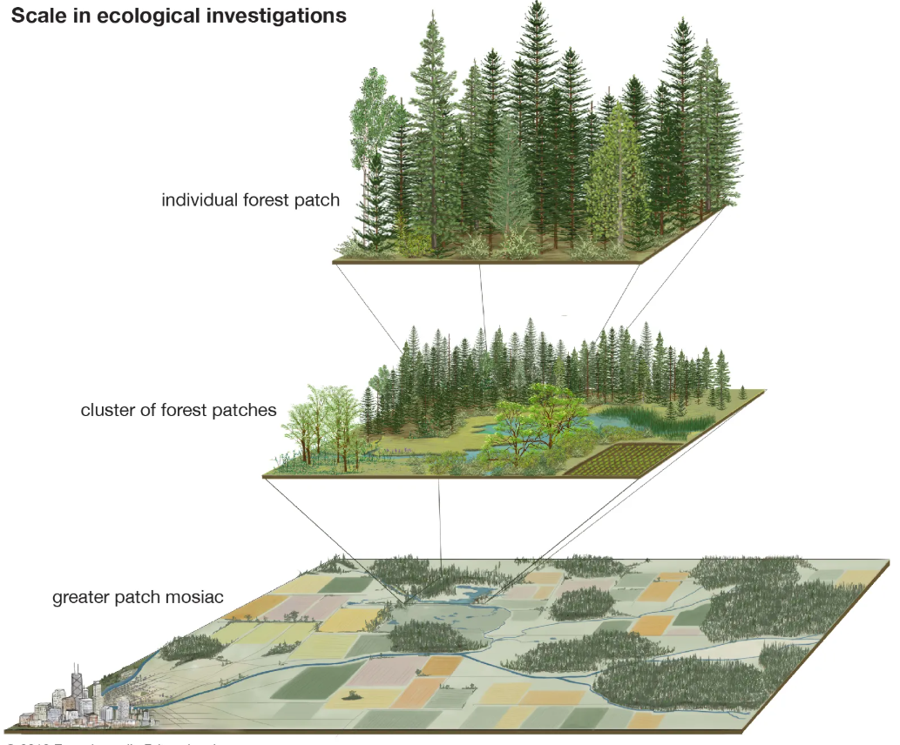
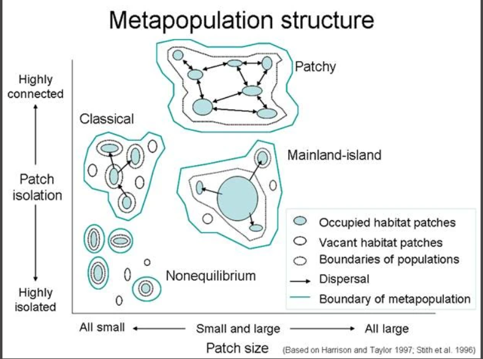
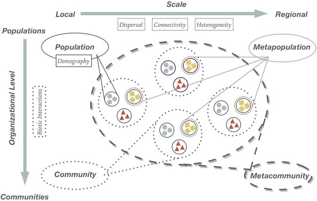

A Evolução da Ciência Ecológica na Biologia da Conservação
Semana 3 — Biologia da Conservação
2026-09-21
Abertura
Semana 3
A evolução da ciência ecológica na Biologia da Conservação
Terça e quinta-feira, 8h–18h
O que vamos percorrer hoje
- Bloco 1: fundação da disciplina (1980–1990)
- Bloco 2: amadurecimento e escala espacial (2000–2010)
- Bloco 3: multiescalaridade contemporânea (2010–2025)
- Bloco 4: síntese crítica e diálogo latino-americano
Pergunta que vai nos acompanhar
A ciência ecológica que fundamenta a conservação é neutra, ou é também um campo de disputa sobre que natureza — e que humano — deve ser protegido?
Guardem essa pergunta. Retornamos a ela no Bloco 4.
Marco de partida
- Criação da Society for Conservation Biology (SCB) — 1987
- Fundação da revista Conservation Biology — 1988
- Ponto de chegada: repertório ecológico multiescalar do presente
Bloco 1 — Fundação da Disciplina (1980–1990)
Uma “ciência de crise”
- Resposta direta a uma crise de extinção acelerada
- Não nasceu de curiosidade teórica pura — nasceu de urgência aplicada
- Disciplina oportunista: recruta o que for útil de outras ciências biológicas
O núcleo ecológico fundador
- Biogeografia de ilhas
- Ecologia de populações e demografia
- Genética de populações
- Biologia evolutiva
- Disciplinas aplicadas de manejo (fauna, silvicultura)
Biogeografia de ilhas
- Teoria de MacArthur & Wilson (1967) adaptada a fragmentos de habitat
- Fragmentos tratados como “ilhas” ecológicas
- Sustentou décadas de debate sobre desenho de reservas

Biogeografia de ilhas

debate SLOSS

Biogroagrafia de ilhas

Demografia e viabilidade populacional
- Relação entre tamanho populacional e persistência
- Origem da Análise de Viabilidade Populacional (PVA)
- Ferramenta central para estimar risco de extinção
Genética de populações
- Alerta central: depressão endogâmica em populações pequenas
- Perda de variabilidade genética compromete adaptação futura
- Um dos pilares do vocabulário conservacionista
Espécies criticamene ameaçadas

Espécies criticamene ameaçadas

Biologia evolutiva (papel inicial)
- Presença tímida — menos central nos anos 1980
- Perspectiva sobre processos adaptativos e filogenia
- Retomada com força décadas depois (biologia evolutiva da conservação)
Macroecologia e Biogeografia

Disciplinas aplicadas de manejo
- Silvicultura e manejo de fauna: tradição prévia à própria disciplina
- Forneceram ferramentas técnicas e cultura profissional
- Cultura de intervenção direta em ecossistemas manejados

Para pensar
Um núcleo populacional e de pequena escala
O problema típico dos anos 1980: uma população isolada, ou poucos remanescentes fragmentados, cuja persistência precisa ser avaliada.

Conceito-chave: ciência de crise
- Organiza-se em torno da urgência de um problema aplicado
- Antecede a consolidação de um corpo teórico unificado
- Explica a disposição contínua a incorporar novos subcampos
Uma nota sobre geografia (já aqui)
- Cronologia centrada em instituições dos EUA e Europa
- Não invalida a narrativa — mas descreve um campo acadêmico específico
- Preocupação humana com a natureza tem raízes muito mais antigas e diversas
Para reter do Bloco 1
- SCB (1987) e Conservation Biology (1988) como marcos institucionais
- Núcleo: biogeografia, demografia, genética, evolução, manejo aplicado
- Escala predominante: populacional, espacialmente restrita
Discussão em grupo
Por que a disciplina nasceu como “ciência de crise”, e o que isso implicou metodologicamente para os primeiros trinta anos da conservação biológica?
Registro de leitura obrigatória
Transição
Do núcleo fundador à ampliação de escala espacial: o que muda entre 1990 e 2010?
Bloco 2 — Amadurecimento e Escala Espacial (2000–2010)
De aplicação biológica a ciência de engajamento
- 2006: Conservation Biology celebra vinte anos
- Reconhece subdisciplinas novas geradas pelo campo
- Mudança na autocompreensão: ciência de engajamento com políticas públicas
Seis subdisciplinas reconhecidas em 2006
- Genética da conservação
- Ecologia da paisagem
- Planejamento sistemático da conservação
- Medicina da conservação
- Economia ecológica
- Ecologia da restauração
A pergunta ecológica muda
- Anos 1980: “esta população isolada é viável?”
- Anos 2000: “como esta paisagem funciona como sistema, em múltiplas escalas?”
A incorporação da escala espacial
- Do foco populacional para metapopulações
- Ecologia da paisagem e biogeografia regional
- Emergência de uma “ciência da biodiversidade”

Ecologia da paisagem
- Conectividade, corredores ecológicos, efeitos de borda
- Estrutura espacial como variável de manejo — não pano de fundo
- Ferramentas para medir fragmentação de habitat

Teoria de metapopulações
- Subpopulações interligadas por dispersão
- Persistência regional mesmo com extinções locais
- Reformulou o conceito de “viabilidade” em paisagens fragmentadas

Ecologia da restauração ganha centralidade
- Ano 2000: previsão de importância crescente (Young 2000)
- Distinta formalmente da biologia da conservação
- Compartilha objetivos centrais de biodiversidade

Genética da conservação amadurece
- A partir da genética de populações fundacional
- Ferramentas moleculares cada vez mais sofisticadas
- Diversidade genética, fluxo gênico, estrutura populacional

Planejamento sistemático da conservação
- Métodos quantitativos de priorização de áreas
- Metas de representatividade de biodiversidade
- Seleção de reservas como problema de otimização formal

Medicina da conservação
Economia ecológica
- Ferramentas de valoração e custo-benefício
- Justificativa de decisões para formuladores de políticas
- Ponte entre ciência ecológica e tomada de decisão
O primeiro sinal de interdisciplinaridade
- Reconhecimento de que dados ecológicos não bastam
- Integração das ciências sociais ainda incipiente nos anos 2000
- Tornar-se consenso explícito na década seguinte
Para reter do Bloco 2
- Seis novas subdisciplinas consolidadas até 2006
- Escala espacial como eixo central de expansão ecológica
- Restauração ecológica ganhando centralidade estratégica
Discussão em grupo
Importante
Na sua trajetória de formação, você identifica que eve contato com estas novas sub-disciplinas da Ciência da Conservação? Em que nível?
Registro de leitura obrigatória
Fechamento do Bloco 2
Próximo bloco: a multiescalaridade contemporânea — macroecologia, metacomunidades e a ampliação da escala temporal.
Bloco 3 — Multiescalaridade Contemporânea (2010–2025)
Um repertório cada vez mais heterogêneo
- Aumento de abordagens estatísticas sofisticadas
- Ferramentas genômicas incorporadas em larga escala
- Ascensão de termos: mudança climática, espécies invasoras, serviços ecossistêmicos, meta-análise
Um achado revelador (2000–2014)
Aviso
A contribuição relativa da ecologia clássica dentro da biologia da conservação diminuiu proporcionalmente, enquanto cresceram os componentes sociais e políticos.
Aviso
- Não significa que a ecologia ficou menos importante em termos absolutos
- Significa que o espaço relativo dela diminuiu frente a novas dimensões
Macroecologia
- Padrões ecológicos em escalas continentais a globais
- Apoio a avaliações e projeções de biodiversidade
- Mudança de granularidade: de população para padrões continentais

Macroecologia e mudança global
- Disponibilidade de grandes bases de dados
- Poder computacional crescente
- Natureza intrinsecamente global de ameaças como o clima

Ecologia de metacomunidades
- Síntese conceitual proposta como especialmente útil à conservação
- Integra: demografia local + dispersão + heterogeneidade de habitat + interações bióticas

Metacomunidades vs. metapopulações
- Metapopulações: uma espécie, várias manchas
- Metacomunidades: várias espécies interagentes, vários sítios conectados
- Escala de complexidade mais próxima da realidade de gestão
A ampliação da escala temporal
- Paleobiologia da conservação
- Paleoecologia aplicada
- Séries temporais de décadas a milênios
Uma consequência conceitual importante
Nota
O registro paleoecológico mostra ecossistemas sempre em fluxo — desloca metas de “manutenção histórica fixa” para metas de capacidade adaptativa.
Para reter do Bloco 3
- Macroecologia e metacomunidades como sínteses de escala ampliada
- Paleobiologia e paleoecologia ampliam a escala temporal
- Brasil: potencial elevado, reconhecimento internacional ainda assimétrico
Discussão em grupo
Importante
Se o registro paleoecológico mostra que ecossistemas sempre mudaram, o que isso implica para metas de conservação baseadas em “restaurar o estado natural original”?
Registro de leitura obrigatória
Fechamento do Bloco 3
Próximo bloco: síntese crítica — de onde vem essa ciência, e o que muda quando olhamos a partir do Sul.
Bloco 4 — Síntese Crítica e Diálogo Latino-Americano
O arco geral, revisitado
Núcleo (1980) → escala espacial (2000) → multiescalaridade (2010–2025)
Biogeografia, demografia, genética → paisagem, metapopulações, restauração → macroecologia, metacomunidades, paleoecologia
Uma pergunta que a cronologia não responde
Aviso
De onde essa ciência tem sido produzida — e o que essa geografia da produção científica esconde ou revela?
Uma cronologia institucional, não neutra
- Segue a criação de uma sociedade científica específica (SCB)
- Segue a fundação de um periódico específico
- Concentrada em universidades da América do Norte e Europa
Diegues: o mito moderno da natureza intocada
- Crítica à visão preservacionista ocidental (modelo Yellowstone)
- Áreas protegidas como espaços “vazios” e “intocados”
- Ignora relações simbióticas de longa duração entre populações tradicionais e ecossistemas
Diegues e o núcleo fundador ecológico
Nota
Biogeografia de ilhas e desenho de reservas foram desenvolvidos a partir de um pressuposto implícito: natureza ideal = sem presença humana permanente.
Leff: saber ambiental e racionalidade ambiental
- Saber ambiental não se reduz ao conhecimento científico formal
- Emerge da interação entre ciência, complexidade e relações de poder
- Poder determina que conhecimentos são validados e quais são marginalizados
Leff aplicado à nossa cronologia
A “expansão” da ciência ecológica é também um processo de definição de fronteiras: o que conta como conhecimento relevante, e o que fica de fora (saberes tradicionais não publicados em periódicos indexados).
Ulloa: a construção do nativo ecológico
- Etnografia de movimentos indígenas na Colômbia
- Atribuição essencializada de “guardião natural” a povos indígenas
- Frequentemente desconectada das reivindicações políticas próprias desses povos
O alerta de Ulloa para a conservação
Aviso
Incorporar conhecimento tradicional sem entender disputas internas às comunidades pode reproduzir, sob nova forma, a mesma lógica de apropriação que Diegues denuncia.
Santilli: socioambientalismo no direito brasileiro
- Consolidação na Constituição Federal de 1988
- Ponte formal entre proteção da biodiversidade e direitos territoriais
- Povos indígenas e comunidades tradicionais como sujeitos de direito
Little: territórios sociais no Brasil
- Antropologia da territorialidade
- Terras indígenas, quilombos, reservas extrativistas
- Tensão entre territorialidades tradicionais e arcabouço jurídico do Estado
O que muda quando olhamos a partir do Sul
- PPBio e GBB: produção científica com lógica própria, não aplicação tardia
- Sub-representação da paleobiologia sul-americana: estrutura desigual de reconhecimento, não menor qualidade
- “Virada social” da conservação: reencontro tardio com debates latino-americanos antigos
(Rosa et al. 2021; Vilaça et al. 2024; De Assumpção e Ritter 2025; Hintzen et al. 2019)
Martínez-Alier: o ecologismo dos pobres
Nota
O meio ambiente é uma necessidade dos pobres, não um luxo dos ricos — conflitos ecológicos como disputas por linguagens de valoração.
Não confundir com o Módulo 5
Importante
Aqui: situar a ciência ecológica em uma geografia de produção do conhecimento. A análise sistemática de poder e economia política da conservação vem no Módulo 5.
Síntese: quatro décadas em uma frase
A biologia da conservação não abandonou suas raízes ecológicas — ela as multiplicou, em escala espacial, temporal e geográfica de produção do conhecimento.
Retomando a pergunta de abertura
A ciência ecológica que fundamenta a conservação é neutra, ou é também um campo de disputa?
Depois de quatro blocos: provavelmente as duas coisas, em graus diferentes conforme a escala e a pergunta.
Discussão final em grupo
Importante
Como usar plenamente as ferramentas da macroecologia, metacomunidades e paleoecologia sem reproduzir os apagamentos identificados por Diegues, Leff e Ulloa?
Síntese para revisão
- Núcleo fundador (1980–1990): biogeografia, demografia, genética, evolução
- Expansão espacial (2000–2010): paisagem, metapopulações, restauração
- Multiescalaridade (2010–2025): macroecologia, metacomunidades, paleoecologia
- Eixo crítico: geografia da produção científica e pensamento latino-americano
Leituras obrigatórias do Bloco 4
- Diegues (2008) — O mito moderno da natureza intocada
- Leff (2001) — Saber Ambiental
- Ulloa (2004) — La construcción del nativo ecológico
- Little (2002) — Territórios sociais e povos tradicionais no Brasil
- Santilli (2005) — Socioambientalismo e novos direitos
- Martínez-Alier (2004) — El ecologismo de los pobres